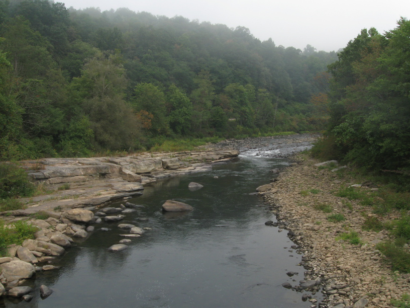
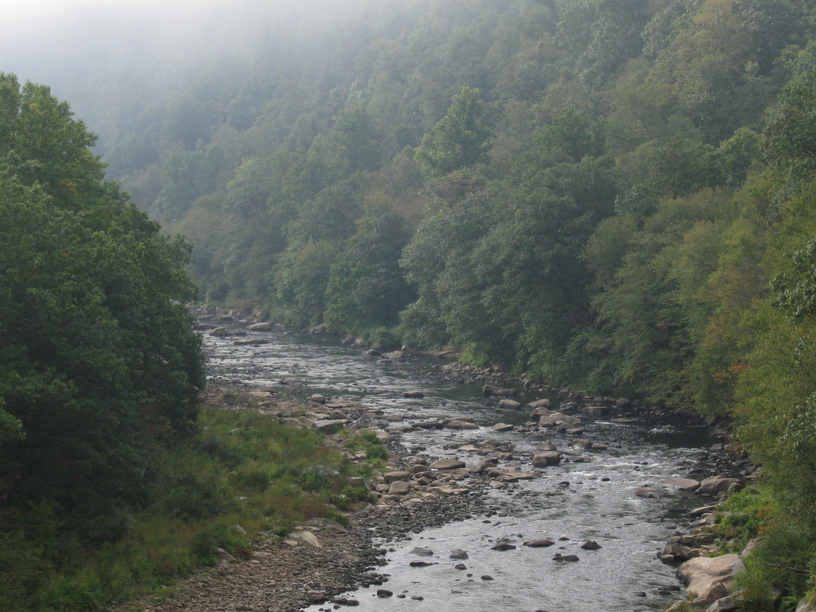
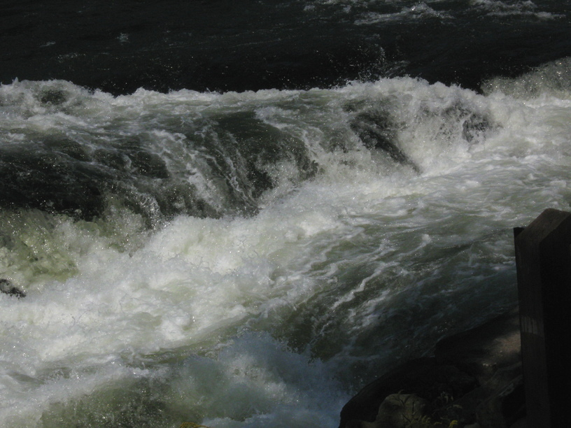
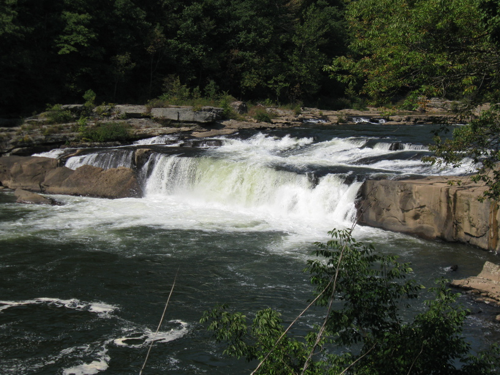

21 Sep 08, Dravo's Landing campground, PA
The first day of fall was a long one for me: 90 miles. I woke up thinking I'd try to go all the way to Kyle's, 116 miles, on the (poor) assumption that I'd be able to maintain 15+ mph as I rode down the nearly-imperceptible 1% grade. I am very satisfied with my progress, though, and I'll have an easy 26 miles to Kyle's tomorrow.
I met some great people today. One guy rode up to pass me, but then we ended up riding along together for like 6-8 miles. He was a bit crazy--said he used to race mountain bikes until two years ago when he had a serious skiing injury. Also, I should mention he was in his 50s.
Another man rode into the campground I'd stopped at with his wife and two young kids. When I told him I was planning to ride cross country his eyes lit up like a kid in a candy shop, and he quickly rattled off some standard questions: How long? Did I know where I'd stay? etc.
Finally, there's Dave, who is sharing the campsite, having just gotten started out of PIttsburgh today. Dave has biked all over the country (and Canada) and is eager to share pointers and stories, but takes a little coaxing. We ended up chatting until 9:30--when I'm typically turning out the light. He had lots of great info to share, and seems like a very interesting guy.
Anyway, bedtime.



